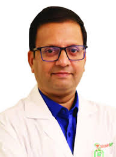
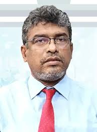

MBBS, FCPS (Medicine), MD (Cardiology), FACC (USA)

MBBS (DMC), MD (Cardiology), FSCAI (USA)
Fellow of Society for Cardiovascular Angiography and Intervention (USA)
Clinical & Interventional Cardiologist
Associate Professor, Cardiology
National Institute of Cardiovascular Diseases & Hospital
Labaid Diagnostic, Malibagh
Address: House # B65, Chowdhury Para, Malibagh, Dhaka
Visiting Hour: 7pm to 10pm (Sat, Tue, Wed & Thu)
Appointment: +8801766662555

MBBS (DMC), MD (Cardiology), FCPS (Medicine), FACC (USA), FACP (USA), FASE (USA),
FSCAI (USA), FRCP (Glasgow & Edinburgh), FCCP (USA), FESC (Europe),
FAHA (USA), FAPSIC (Singapore), FAPSC (Japan)
Cardiology, Medicine, Rheumatic Fever & Diabetes Specialist
Professor & Head of the Department (Cardiology)
National Institute of Cardiovascular Diseases & Hospital
Medinova Medical Services, Malibagh
Address: Gemcon Business Tower, 255 New Circular Road, Malibagh, Dhaka
Visiting Hour: 2pm to 8pm (Sat to Thu), 10am to 12pm (Friday)
Appointment: +8801790118855
MBBS, FCPS (Medicine), MD (Cardiology), FACC (USA)
Cardiology & Medicine Specialist
Professor & Senior Consultant, Cardiology
National Heart Foundation Hospital & Research Institute
Popular Diagnostic Center, Uttara (Jasimuddin)
Address: House # 21, Road # 07, Sector # 04 (Jasimuddin Mor), Uttara, Dhaka
Visiting Hour:7pm to 10pm (Only Saturday)
Appointment: +8809666787805